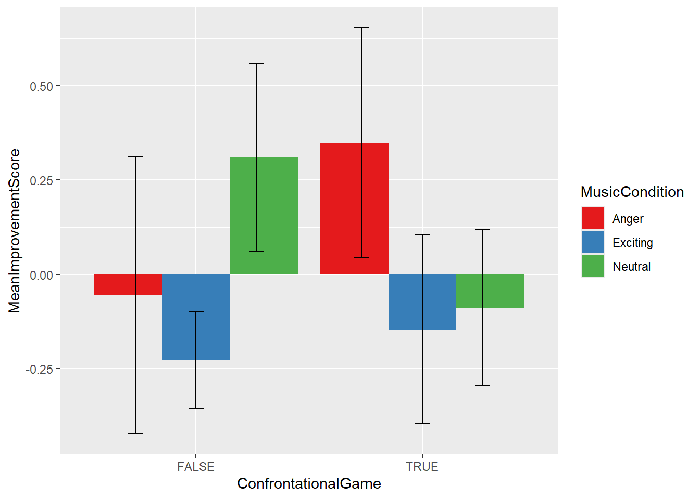

Andrew Lampinen, modified by Janna Wennberg and then Seyi Lawal
Published
October 15, 2024
In this assignment we’ll learn about dplyr and tidyr, two packages from the tidyverse that allow elegant and easily understandable data tidying and manipulation. We’ll do this by working through the steps of loading an actual dataset, tidying it up, and carrying out some basic analyses.
The dataset we’re using comes from the OSF Reproduciblity project replication of a study by Maya Tamir, Christopher Mitchell, and James Gross (“Hedonic and Instrumental Motives in Anger Regulation,” Tamir, Mitchell, and Gross, Psychological Science, 2008). You can find the replication report here, and the original paper here. The replication tests two hypotheses from the original paper:
Rating hypothesis: Participants will prefer listening to angry music (or recalling an anger-inducing experience) before playing a confrontational (violent) game, but will prefer listening to exciting or neutral music (or recalling a calm experience) before a neutral game. This is assessed through preference ratings where the participants read a description of a game, and then are asked to rate on a likert scale.
Performance hypothesis: Subjects would perform better after listening to angry music on a confrontational game (not one of the ones described in the materials for the previous hypothesis, to avoid contamination), but would perform better on a non-confrontational game (again, not described in the materials for hypothesis 1) after listening to non-angry music. This is computed by having the subjects play without music for 5 minutes, and then after/with music for 5 minutes, and comparing change scores depending on the music type.
First, let’s load the libraries we’re going to use.
library(foreign) # for reading spss formatted datalibrary(tidyr)library(dplyr)
Attaching package: 'dplyr'
The following objects are masked from 'package:stats':
filter, lag
The following objects are masked from 'package:base':
intersect, setdiff, setequal, union
library(stringr) # useful for some string manipulationlibrary(ggplot2)
Load Data
d =read.spss("data/Tamiretal2008ReplicationData.sav", to.data.frame=T)
This data is what we call wide form – each subject is a single row, and the columns represent different observations. This is a somewhat inconvenient way of representing the data, for example if we wanted to do the same operation to each likert rating (for example normalize it to be in the range 0-1), we’d have to do it on each of the 40 or so rating columns. To avoid this, our eventual goal will be to convert the data into long form, where each row is a single observation.
For now, take a look at the column names to get a better idea of what all is in the dataset.
And see if you can figure out what range the likert scores are in. What’s the highest number on the likert scale, and what’s the lowest? (Hint, d$Game1Angry1 is one of the likert rating columns, and you may want to use unique)
## your code heremax(unique(d$Game1Angry1), na.rm =TRUE)
[1] 7
min(unique(d$Game1Angry1), na.rm =TRUE)
[1] 1
Highest number: 7 Lowest number: 7
cleaning up a bit
First, we’ll get rid of rows and columns of the data that we don’t need.
filter out excluded rows
First, we need to filter out any rows that should be excluded. According to the report, there are two exclusions:
“exclude data from participant 2 and participant 23 participant 2 is female, and this is a males only study participant 23 was set up on part 2 of the study (the music ratings) twice and never did part 1”
You can see participant 23’s data and the fact that they did not do part 1 by looking at the last rows of the dataframe:
tail(d)
Subject Cond Exper
86 87 1 C:\\Users\\msplab\\Desktop\\Study 151\\Study151Part1.exp
87 88 6 C:\\Users\\msplab\\Desktop\\Study 151\\Study151Part1.exp
88 89 2 C:\\Users\\msplab\\Desktop\\Study 151\\Study151Part1.exp
89 90 3 C:\\Users\\msplab\\Desktop\\Study 151\\Study151Part1.exp
90 23 NA
91 23 NA
Inifile Date Time Game1Angry1 Game1Angry2 Game1Angry3
86 default.mlp 13644633600 40065 1 3 4
87 default.mlp 13644633600 51237 7 7 5
88 default.mlp 13644633600 54293 7 6 6
89 default.mlp 13644633600 58190 5 5 5
90 NA NA NA NA NA
91 NA NA NA NA NA
Game1AngryFriends Game1AngryStrangers Game1CalmFriends Game1CalmStrangers
86 6 7 1 1
87 4 1 4 4
88 7 5 3 2
89 7 7 1 1
90 NA NA NA NA
91 NA NA NA NA
Game1ExcitedFriends Game1ExcitedStrangers Game1Exciting1 Game1Exciting2
86 1 1 1 1
87 7 4 7 7
88 7 6 3 5
89 4 1 1 1
90 NA NA NA NA
91 NA NA NA NA
Game1Exciting3 Game1Intro Game1Neutral1 Game1Neutral2 Game1Neutral3
86 1 ok 2 2 3
87 6 ok 2 1 1
88 2 ok 1 2 1
89 1 ok 1 1 6
90 NA NA NA NA
91 NA NA NA NA
Game2Angry1 Game2Angry2 Game2Angry3 Game2AngryFriends Game2AngryStrangers
86 5 5 7 1 7
87 7 7 4 1 1
88 6 4 6 7 2
89 5 1 7 7 7
90 NA NA NA NA NA
91 NA NA NA NA NA
Game2CalmFriends Game2CalmStrangers Game2ExcitedFriends
86 4 4 2
87 5 6 7
88 3 1 7
89 1 1 1
90 NA NA NA
91 NA NA NA
Game2ExcitedStrangers Game2Exciting1 Game2Exciting2 Game2Exciting3
86 2 5 1 1
87 4 7 1 1
88 5 1 3 1
89 4 3 2 2
90 NA NA NA NA
91 NA NA NA NA
Game2Intro Game2Neutral1 Game2Neutral2 Game2Neutral3 Game3Angry1 Game3Angry2
86 ok 1 1 1 5 3
87 ok 1 1 1 2 1
88 ok 1 2 2 2 4
89 ok 1 3 1 1 1
90 NA NA NA NA NA
91 NA NA NA NA NA
Game3Angry3 Game3AngryFriends Game3AngryStrangers Game3CalmFriends
86 6 1 2 5
87 7 1 1 7
88 4 1 1 6
89 5 2 2 7
90 NA NA NA NA
91 NA NA NA NA
Game3CalmStrangers Game3ExcitedFriends Game3ExcitedStrangers Game3Exciting1
86 6 4 2 1
87 2 7 3 2
88 4 3 6 5
89 6 7 7 2
90 NA NA NA NA
91 NA NA NA NA
Game3Exciting2 Game3Exciting3 Game3Intro Game3Neutral1 Game3Neutral2
86 1 1 ok 5 1
87 1 1 ok 4 6
88 5 6 ok 4 1
89 1 1 ok 4 4
90 NA NA NA NA
91 NA NA NA NA
Game3Neutral3 Game4Angry1 Game4Angry2 Game4Angry3 Game4AngryFriends
86 2 3 1 4 1
87 2 2 1 7 3
88 6 1 1 1 1
89 7 1 3 1 3
90 NA NA NA NA NA
91 NA NA NA NA NA
Game4AngryStrangers Game4CalmFriends Game4CalmStrangers Game4ExcitedFriends
86 1 7 7 7
87 4 2 6 7
88 1 7 5 7
89 3 5 4 7
90 NA NA NA NA
91 NA NA NA NA
Game4ExcitedStrangers Game4Exciting1 Game4Exciting2 Game4Exciting3
86 7 2 5 5
87 7 4 1 2
88 5 5 4 7
89 7 2 4 5
90 NA NA NA NA
91 NA NA NA NA
Game4Intro Game4Neutral1 Game4Neutral2 Game4Neutral3 MusicSelectionEnd
86 ok 5 5 4 ok
87 ok 5 3 1 ok
88 ok 5 5 3 ok
89 ok 1 2 5 ok
90 NA NA NA
91 NA NA NA
MusicSelectionInstrx RecallSelectionEnd RecallSelectionInstrx Subject2 Cond2
86 ok ok ok 87 1
87 ok ok ok 88 6
88 ok ok ok 89 2
89 ok ok ok 90 3
90 23 1
91 23 1
Exper_A Inifile_A
86 C:\\Users\\msplab\\Desktop\\Study 151\\Study151Part2.exp default.mlp
87 C:\\Users\\msplab\\Desktop\\Study 151\\Study151Part2.exp default.mlp
88 C:\\Users\\msplab\\Desktop\\Study 151\\Study151Part2.exp default.mlp
89 C:\\Users\\msplab\\Desktop\\Study 151\\Study151Part2.exp default.mlp
90 C:\\Users\\msplab\\Desktop\\Study 151\\Study151Part2.exp default.mlp
91 C:\\Users\\msplab\\Desktop\\Study 151\\Study151Part2.exp default.mlp
Date_A Time_A DescribeMusic HowActiveAngry1 HowActiveAngry2
86 13644633600 42314 2 5 5
87 13644633600 53402 2 5 5
88 13644633600 56552 2 5 3
89 13644633600 60558 2 5 5
90 13643078400 61329 2 4 5
91 13643078400 63502 2 4 3
HowActiveAngry3 HowActiveExciting1 HowActiveExciting2 HowActiveExciting3
86 4 5 5 5
87 5 5 5 5
88 4 4 5 5
89 3 5 5 5
90 5 3 3 3
91 5 4 3 5
HowActiveNeutral1 HowActiveNeutral2 HowActiveNeutral3 HowAngryAngry1
86 1 1 1 3
87 2 2 1 5
88 1 2 1 5
89 1 1 1 5
90 3 4 3 3
91 4 4 2 2
HowAngryAngry2 HowAngryAngry3 HowAngryExciting1 HowAngryExciting2
86 5 1 1 1
87 5 1 3 1
88 5 4 2 3
89 5 3 3 1
90 3 2 3 2
91 3 2 3 3
HowAngryExciting3 HowAngryNeutral1 HowAngryNeutral2 HowAngryNeutral3
86 1 1 5 1
87 2 1 1 1
88 1 1 1 1
89 1 1 1 1
90 2 2 2 2
91 1 2 2 1
HowExcitedAngry1 HowExcitedAngry2 HowExcitedAngry3 HowExcitedExciting1
86 4 4 4 3
87 5 5 5 5
88 5 5 4 3
89 5 5 5 4
90 4 4 5 5
91 3 3 3 3
HowExcitedExciting2 HowExcitedExciting3 HowExcitedNeutral1
86 4 4 1
87 5 5 1
88 4 5 2
89 5 4 1
90 5 3 3
91 5 4 3
HowExcitedNeutral2 HowExcitedNeutral3 HowPleasantAngry1 HowPleasantAngry2
86 2 1 3 3
87 5 5 1 1
88 2 1 3 3
89 1 2 2 1
90 4 4 1 1
91 4 3 2 2
HowPleasantAngry3 HowPleasantExciting1 HowPleasantExciting2
86 4 2 4
87 5 5 5
88 2 3 3
89 3 1 5
90 1 1 2
91 1 2 5
HowPleasantExciting3 HowPleasantNeutral1 HowPleasantNeutral2
86 3 3 3
87 2 5 5
88 5 4 4
89 2 4 4
90 1 3 3
91 3 5 5
HowPleasantNeutral3 MusicRatingEnd MusicRatingInstrx WhichGames aboutyou age
86 2 ok ok ok ok 20
87 5 ok ok ok ok 18
88 5 ok ok ok ok 18
89 5 ok ok ok ok 18
90 3 ok ok ok ok 20
91 1 ok ok ok ok 20
distractions endinstructions ethnicity overlooking race sex whatabout year
86 ok ok 2 ok 2 1 ok 2
87 ok ok 2 ok 1 1 ok 1
88 ok ok 2 ok 2 1 ok 1
89 ok ok 2 ok 2 1 ok 1
90 ok ok 2 ok 1 1 ok 2
91 ok ok 2 ok 1 1 ok 2
Subject3 DDNoMusicLevel DDNoMusicScore DDMusicLevel DDMusicScore
86 87 3 0 3 170
87 88 3 0 3 866
88 89 2 3280 3 820
89 90 2 3040 3 0
90 23 2 3990 3 750
91 23 NA NA NA NA
SOFNoMusicEnemies SOFNoMusicFriendlies SOFNoMusicTime SOFMusicEnemies
86 15 0 13140 25
87 24 0 23460 27
88 7 0 8880 31
89 22 2 28440 26
90 9 2 19260 18
91 NA NA NA NA
SOFMusicFriendlies SOFMusicTime GameComments
86 1 23160 Participant died, restart
87 0 22380
88 0 23100
89 0 25500
90 2 24120
91 NA NA
DoNotUseVideoGamePerformanceData ConfrontationalAngryMusicScore
86 1 4.166667
87 NA 6.166667
88 1 5.833333
89 NA 4.666667
90 NA NA
91 NA NA
ConfrontationalExcitingMusicScore ConfrontationalNeutralMusicScore
86 1.666667 1.666667
87 4.833333 1.166667
88 2.500000 1.500000
89 1.666667 2.166667
90 NA NA
91 NA NA
ConfrontationalAngryRecallScore ConfrontationalExcitingRecallScore
86 6.50 1.25
87 2.50 5.50
88 5.25 6.25
89 7.00 3.25
90 NA NA
91 NA NA
ConfrontationalNeutralRecallScore NonconfrontationalAngryMusicScore
86 1.75 3.666667
87 4.50 3.333333
88 2.25 2.166667
89 1.00 2.000000
90 NA NA
91 NA NA
NonconfrontationalExcitingMusicScore NonconfrontationalNeutralMusicScore
86 2.500000 3.666667
87 1.833333 3.500000
88 5.333333 4.000000
89 2.500000 3.833333
90 NA NA
91 NA NA
NonconfrontationalAngryRecallScore NonconfrontationalExcitingRecallScore
86 1.25 4.25
87 1.75 6.00
88 1.00 4.25
89 2.25 7.00
90 NA NA
91 NA NA
NonconfrontationalNeutralRecallScore ConfrontationalAngerScore
86 5.75 5.1
87 5.50 4.7
88 5.25 5.6
89 6.00 5.6
90 NA NA
91 NA NA
ConfrontationalExcitingScore ConfrontationalNeutralScore
86 1.5 1.7
87 5.1 2.5
88 4.0 1.8
89 2.3 1.7
90 NA NA
91 NA NA
NonconfrontationalAngerScore NonconfrontationalExcitingScore
86 2.7 3.2
87 2.7 3.5
88 1.7 4.9
89 2.1 4.3
90 NA NA
91 NA NA
NonconfrontationalNeutralScore Usable DoNotUse
86 4.5 1 NA
87 4.3 1 NA
88 4.5 1 NA
89 4.7 1 NA
90 NA 0 1
91 NA 0 1
ProblemDetails
86
87
88
89
90 Participant 23 was set up on part 2 of the survey when he was supposed to be set up on part 1; he did part 2 twice; data should be excluded entirely
91 Participant 23 was set up on part 2 of the survey when he was supposed to be set up on part 1; he did part 2 twice; data should be excluded entirely
DinerDashWithMusicScore DinerDashWithoutMusicScore MusicCondition
86 5170 5000 Anger
87 5866 5000 Neutral
88 5820 3280 Exciting
89 5000 3040 Neutral
90 5750 3990 <NA>
91 NA NA <NA>
ZDinerDashWithMusicScore ZDinerDashWithoutMusicScore ZSOFNoMusicEnemies
86 -1.02044667 0.2692740 -0.1401958
87 -0.02167208 0.2692740 1.0044959
88 -0.08768304 -1.1667773 -1.1576995
89 -1.26440023 -1.3671565 0.7501199
90 -0.18813451 -0.5739887 -0.9033236
91 NA NA NA
ZSOFMusicEnemies DinerDashDifferenceScore SOFDifferenceScore
86 0.5785486 -1.2897207 0.71874445
87 0.8387424 -0.2909461 -0.16575340
88 1.3591301 1.0790942 2.51682964
89 0.7086455 0.1027563 -0.04147439
90 -0.3321298 0.3858541 0.57119384
91 NA NA NA
PleasantScoreForAngryMusic PleasantScoreForExcitingMusic
86 3.333333 3.000000
87 2.333333 4.000000
88 2.666667 3.666667
89 2.000000 2.666667
90 1.000000 1.333333
91 1.666667 3.333333
PleasantScoreForNeutralMusic AngryScoreForAngryMusic
86 2.666667 3.000000
87 5.000000 3.666667
88 4.333333 4.666667
89 4.333333 4.333333
90 3.000000 2.666667
91 3.666667 2.333333
AngryScoreForExcitingMusic AngryScoreForNeutralMusic
86 1.000000 2.333333
87 2.000000 1.000000
88 2.000000 1.000000
89 1.666667 1.000000
90 2.333333 2.000000
91 2.333333 1.666667
ExcitedScoreForExcitingMusic ExcitedScoreForNeutralMusic
86 3.666667 1.333333
87 5.000000 3.666667
88 4.000000 1.666667
89 4.333333 1.333333
90 4.333333 3.666667
91 4.000000 3.333333
ActiveScoreForExcitingMusic ActiveScoreForNeutralMusic
86 5.000000 1.000000
87 5.000000 1.666667
88 4.666667 1.333333
89 5.000000 1.000000
90 3.000000 3.333333
91 4.000000 3.333333
ExcitedScoreForAngryMusic ActiveScoreForAngryMusic
86 4.000000 4.666667
87 5.000000 5.000000
88 4.666667 4.000000
89 5.000000 4.333333
90 4.333333 4.666667
91 3.000000 4.000000
Notice that participant 23 has missing values for part 1.
The researchers have made a column called DoNotUse based on their exclusion criteria. Use this column to filter the dataframe! Try running this code
Hint: enter ?dplyr::filter into the console to check the documentation. What happens to na values?
filtered_d = d |>filter(is.na(DoNotUse))# your code here: exclude subjects that are marked as "DoNotUse"
It’s good practice to assign a new variable name (in this case filtered_d) to a data frame when you change it in an important way, or apply a code chunk that shouldn’t be run twice. This helps prevent you seeing different results when you run your code in chunks (and might run one multiple times, or skip it, etc.) vs. knit the document.
Get rid of unnecessary columns
The dataset contains a bunch of columns we don’t care about: * The dataset contains three subject columns, which are identical except for a single NA which is not mentioned in the protocol, and so is likely an error. * Columns telling us the path to the executable run for each part of the experiment, we don’t really care about that. * Etc.
To get rid of these, we’ll use the select function to take only the columns we need.
filtered_d = filtered_d |>select(c("Subject", "Cond"), # Generally important columns for both hypothesescontains("Game"), # we want all the game columns for hypothesis 1-contains("Intro"), -c("WhichGames", "GameComments"), # except thesestarts_with("DinerDashWith"), c("SOFMusicEnemies", "SOFNoMusicEnemies")) # These columns are for hypothesis 2
Even better, let’s split this into separate data frames for hypothesis 1 and hypothesis 2, since they are different types of experiments with different measurements, and therefore different analyses that will need to be performed. Now that we’ve cleaned up the data, this is pretty easy to do! We’ll just drop the columns that are for the other hypothesis. The select function lets us choose which columns to remove (instead of which to keep) by putting a minus sign in front of them. First, let’s create a dataset for the rating hypothesis by getting rid of the game performance columns:
rating_hyp_d = filtered_d |>filter(is.na(DoNotUseVideoGamePerformanceData)) %>%# first, let's get rid of the subjects who did so poorly on one game that their data is unusableselect(-DoNotUseVideoGamePerformanceData, # now get rid of that column-starts_with("DinerDash"), # and the other columns we don't need-starts_with("SOF"))
Now you try! Fill in the selection criteria to get rid of the “Game” columns, which we don’t need for the performance hypothesis. (It’s simpler than the code block above, because you don’t need to do a filter first, only a select.)
performance_hyp_d = filtered_d |>filter(is.na(DoNotUseVideoGamePerformanceData)) |>select(-DoNotUseVideoGamePerformanceData,-starts_with("Game")) # your code here: remove the columns containing "Game" in the name
Converting to long form
Now we want to convert the data to long form, to make the rest of our manipulations easier. To do this, we can use pivot_longer on the target columns. This will take many columns, and change the column names into entries in a “key” column, while the values that were in the original column will be turned into entries in a “value” column. It’s easiest to see with an example:
tiny_demo_d =head(performance_hyp_d, 2) # get just the first two subjects performance data, for a demo
First, take a look at the original wide-form data:
tiny_demo_d |>pivot_longer(cols=-c("Subject", "Cond"), # this tells it to transform all columns *except* these onesnames_to='Measurement', values_to='Value')
The measurement column in each dataset now contains a bunch of different types of information. Really, we would like these to be separate columns. For example, we could have one column telling you which video-game it is, and one telling you whether there was music. Tidyverse contains some handy features for splitting columns, but unfortunately the measurement names here are not well suited to it (if the different types of information were always the same length, or were separated by a symbol like “.” or “_“, it would be easy). Thus we’ll have to do a bit of manual testing. We can use the mutate function in dplyr to create new columns as functions of old ones (or alter existing columns). We’ll also use the grepl function, which lets us test whether a regular expression (a fancy type of search pattern) is contained in a column name. For most your purposes, you can probably just use grepl to search for strings, but there are some other quite useful functions in regular expressions, like the”or”” function (|) we use below.
But first, a quick tiny demo about how mutate generally works:
performance_hyp_long_d = performance_hyp_long_d |>mutate(# create a new variable that will say whether the measurement was of the game soldier of fortune (SOF).ConfrontationalGame =grepl("SOF", Measurement), # creates a new column named WithMusic, which is False if the measurement contains *either* "NoMusic" or "WithoutMusic"WithMusic =!grepl("NoMusic|WithoutMusic", Measurement),# Get rid of uninterpretable condition labelsCond =ifelse(Cond >3, Cond -3, Cond),# Get rid of uninterpretable condition labelsMusicCondition =factor(Cond, levels =1:3, labels =c("Anger", "Exciting", "Neutral")) )
# Note: You can also do steps 3 and 4 (Cond and MusicCondition) in one step with the following:# MusicCondition = factor(ifelse(Cond > 3, Cond - 3, Cond), # levels = 1:3, labels = c("Anger", "Exciting", "Neutral"))# Instead of passing in the already-modified "Cond" column, this changes the Cond values and then uses # those changed values to create the Music Condition levels.# I prefer to go one step at a time for readability and teaching purposes, but I figured I would mention!
Now you can help! For the rating dataset, write a test on a measurement name, using grepl or %in% to figure out whether it’s a recall or a music rating. Your new IsRecall column should be true if the measurement name contain either “Friends” or “Strangers”.
Here are a couple other useful ways of manipulating columns. (You won’t remember all the functions you see here now, but that’s okay. You can always reference this tutorial later if there’s something you need to figure out how to do.)
rating_hyp_long_d = rating_hyp_long_d |>mutate(# Pulls out the game numberGameNumber =as.numeric(substr(rating_hyp_long_d$Measurement, 5, 5)),# We can then use that new GameNumber Column right away# Games 1 and 2 are confrontational, Games 3 and 4 are notConfrontationalGame = GameNumber <=2, # Now that we have added the game number and whether it is confrontational elsewhere,# we can just pull out the emotion! Let's do it in two steps:# Grab the string of emotionsEmotion =str_extract(Measurement, "Angry|Neutral|Excited|Exciting|Calm"),# Clean up annoying labeling using TWO ifelse statements# The data uses "Excited" and "Exciting" to describe the same music# Similar with "Calm" and "Neutral"Emotion =ifelse(Emotion =="Excited", "Exciting", ifelse(Emotion =="Calm", "Neutral", Emotion)) )
Groups, Summaries, and Results
Performance Hypothesis
For the performance data, we need to do a little bit of manipulation of the columns in order to get to the performance measures the experimenters actually used. Because they want to compare changes in performance across games that have very different scoring systems, the easiest solution is to compare z-scores. The way they did this was to z-score performance before music, z-score performance after music, and then create a difference measure which is a difference of z-scores. (To my mind, this is actually not quite the correct way to analyze this data, but like the replication we will follow the original authors.)
We’ll add a new z-scored value column. However, we have to be careful! We want to z-score within groups of the rows, that are all the same type of measurement. For example, we want to z-score the “DinnerDashWithMusic” scores with respect to eachother, but not with respect to the scores from the other game, for example. We can use the group_by function to set groups, and then all the changes we apply will only occur within those groups until we ungroup the dataset.
To make this more concrete, let’s see how the group_by function can let us compute means within different groups, for example mean scores on the two different games.
performance_hyp_long_d |>group_by(ConfrontationalGame, WithMusic) |>summarize(AvgScore =mean(Score, na.rm=T)) # the na.rm tells R to ignore NA values
`summarise()` has grouped output by 'ConfrontationalGame'. You can override
using the `.groups` argument.
This makes it clear why we can’t just z-score the games together! The scores are very different between games. So let’s z-score within groups (using the scale function):
performance_hyp_long_d = performance_hyp_long_d |>group_by(ConfrontationalGame, WithMusic) |># we're going to compute four sets of z-scores, one for the confrontational game without music, one for the confrontational game with, one for the nonconfrontational game without music, and one for the nonconfrontational game withmutate(z_scored_performance =scale(Score)) |>ungroup()
Rating Hypothesis
The rating hypothesis analysis also requires some grouped manipulation. The experimenters collected repeated measures on ratings in each emotion category and each music/recall category from each game. For this analysis, they averaged all the ratings over the following two variables: the given emotion and the game type, to produce a nice summary. Your job is to implement this, calling the new variable MeanRating, and save the summarized data in a new data frame called rating_summary_d. (Hint: use a group_by and a summarize.)
Up to reordering (and the fact that we didn’t compute error bars), this is a pretty decent replication of Fig. 1 from the original Tamir et al. paper. The ratings were highest for Angry in the confrontational game, and lowest for Angry in the non-confrontational game.
Performance Hypothesis (Continued)
There are still a few more steps to go for the performance hypothesis. We need to take a difference score to see how people improved from before hearing the music to after, and then see if the improvement is larger if they heard music congruent with the type of game.
To compute the difference score, we have to make our data a bit wider. We now want to subtract the pre-music scores from the post-music scores, which is easiest to do if they are in two different columns. To do this we’ll use the pivot_wider function (which is more or less the opposite of pivot_longer)
performance_diff_d = performance_hyp_long_d |># re-label variable so code is easier to readmutate(WithMusic =factor(WithMusic, levels=c(F, T), labels=c("PreMusic", "PostMusic"))) |># now we remove columns we don't need (why might this be?)select(-c("Score", "Measurement")) |>pivot_wider(names_from=WithMusic, values_from=z_scored_performance) |>mutate(ImprovementScore=PostMusic-PreMusic)
If you don’t understand every step of that code (or any other dplyr code), it can be helpful to look at the result of running just the first line, then just the first two lines, and so on.
Now we’re finally to reproduce Fig. 2 from Tamir et al., we just need to get the mean differences within each game and each kind of music, and save them to a variable called MeanImprovementScore:
(Bonus: also calculate the SEM in the summary data, and then add errorbars to the plot with geom_errorbar!)
performance_summary_d = performance_diff_d |>group_by(ConfrontationalGame, MusicCondition) |>summarize(MeanImprovementScore =mean(ImprovementScore, na.rm=T), sd =sd(ImprovementScore), n =n(), se = sd/sqrt(n), .groups ='drop')ggplot(performance_summary_d, aes(x=ConfrontationalGame, y=MeanImprovementScore, fill=MusicCondition)) +geom_bar(position="dodge", stat="identity") +geom_errorbar(aes(ymin = MeanImprovementScore - se, ymax = MeanImprovementScore + se), position =position_dodge(0.8), width =0.2) +scale_fill_brewer(palette="Set1")

Not quite as exact a replication of the effect as Fig. 1. This concurs with the replication report, which says that the hypothesis 1 effect replicated, but hypothesis 2 did not.